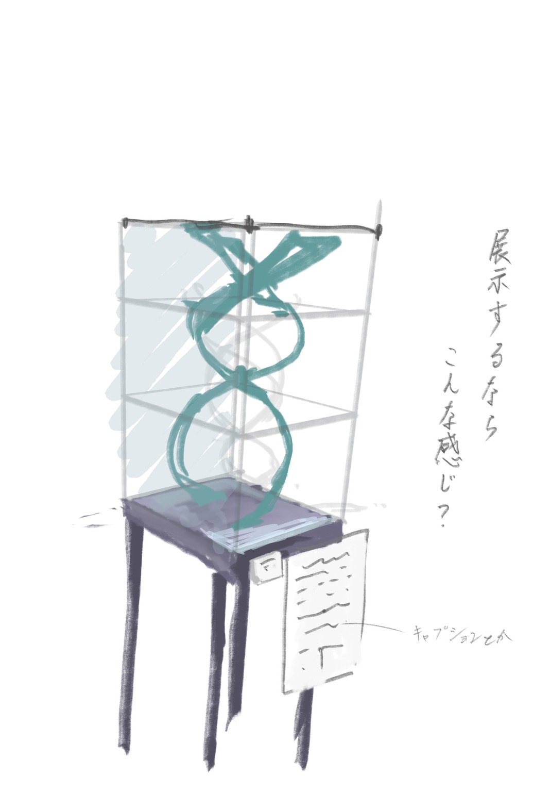

<!DOCTYPE html> 
<html> 
  <head> 
    <script src="https://aframe.io/releases/1.0.0/aframe.min.js"></script> 
    <script src="https://raw.githack.com/AR-js-org/AR.js/master/aframe/build/aframe-ar.js"></script>  
  </head> 
  <body> 
    <a-scene  vr-mode-ui="enabled: false" embedded arjs> 
      <!-- <a-assets timeout="10000">
        </img>
        </img>
      </a-assets> -->

      <a-marker preset="custom"  type="pattern" url="./pattern-tradewaltz.patt"> 
        <a-box color="blue" position="0 0 0" wireframe="true"></a-box> 
        <a-box color="red" position="0 1 0" depth="0.5" width="0.5" height="0.5" wireframe="true"></a-box> 
      </a-marker> 

      <a-marker preset="custom"  type="pattern" url="./assets/marker/pattern-QR.patt"> 
        <a-box color="blue" position="0 0 0" wireframe="true"></a-box> 
        <a-box color="red" position="0 1 0" depth="0.5" width="0.5" height="0.5" wireframe="true"></a-box> 
      </a-marker> 
      <a-entity camera></a-entity> 
    </a-scene> 
  </body> 
</html>